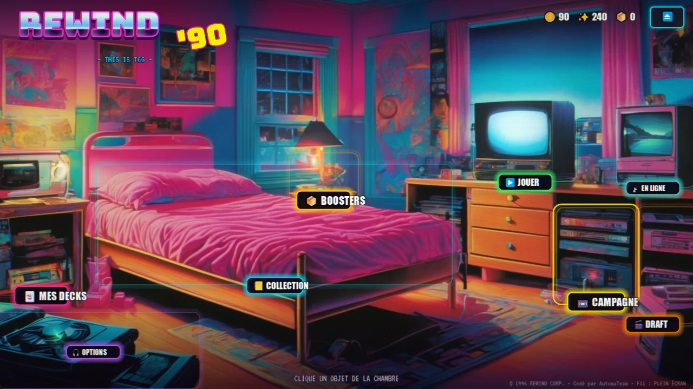
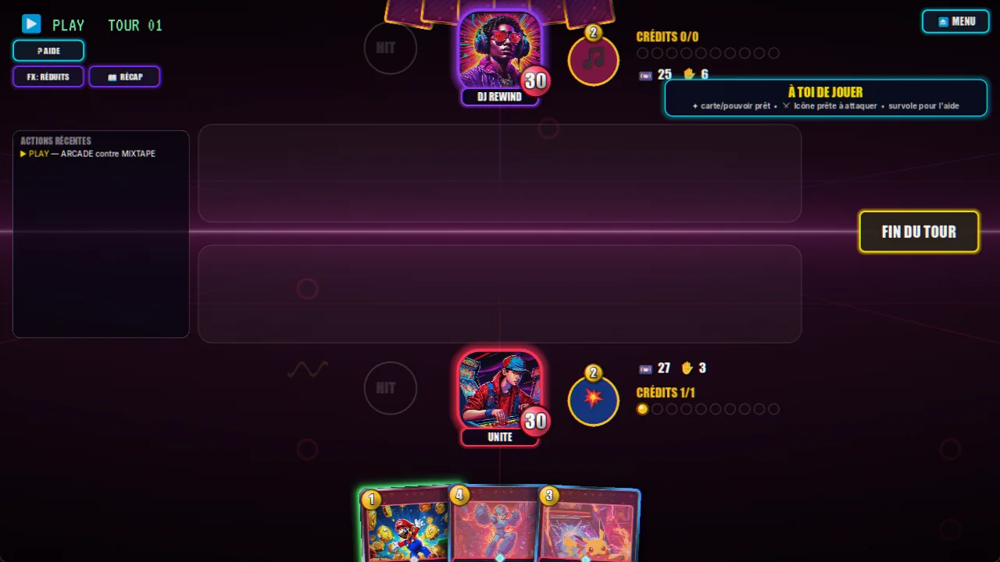
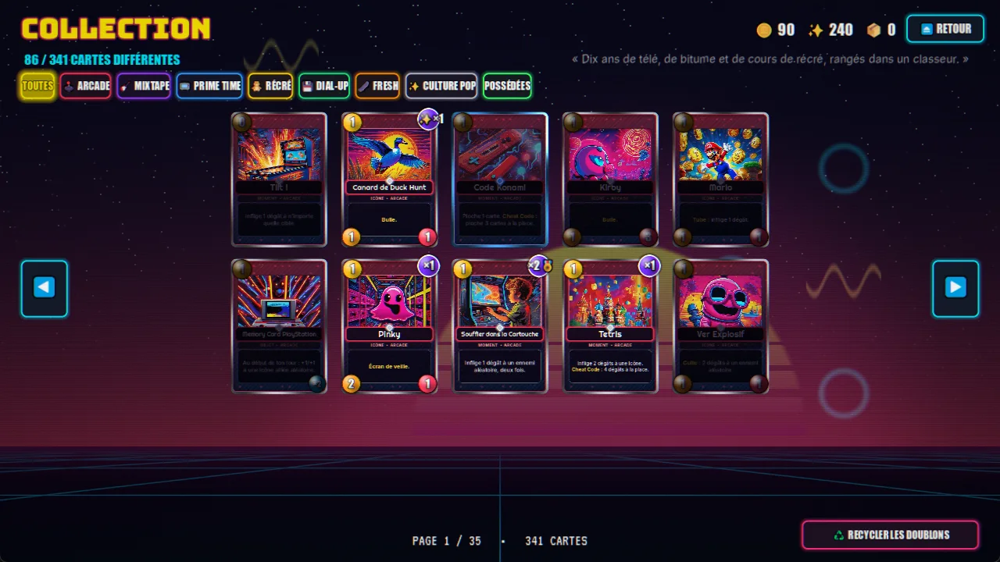
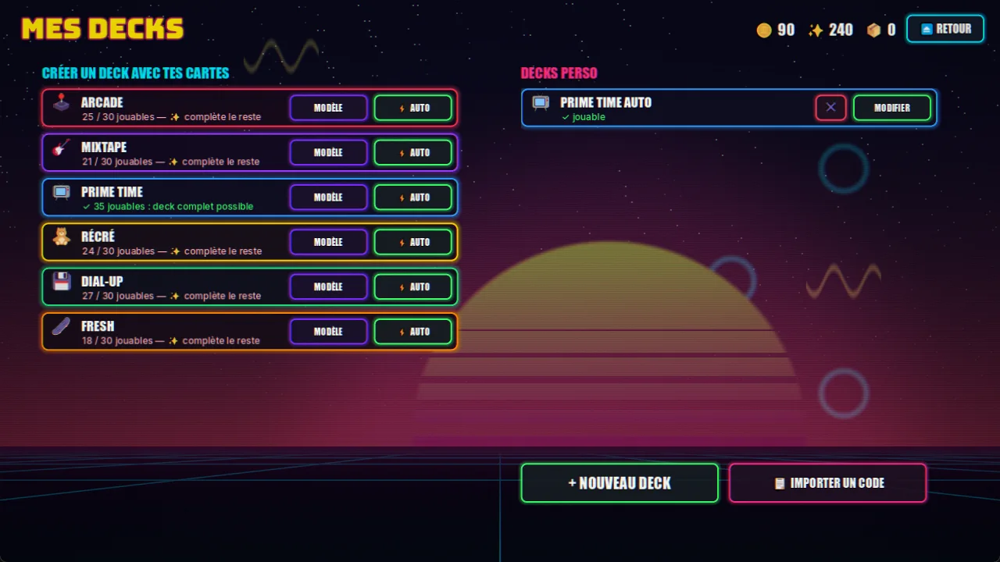
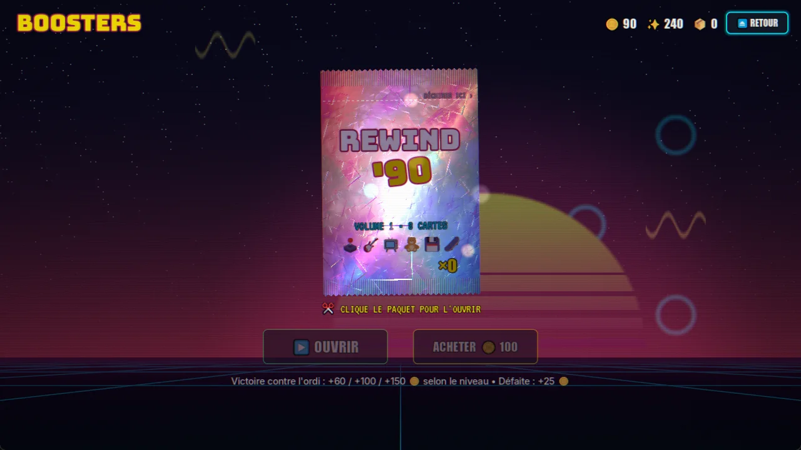
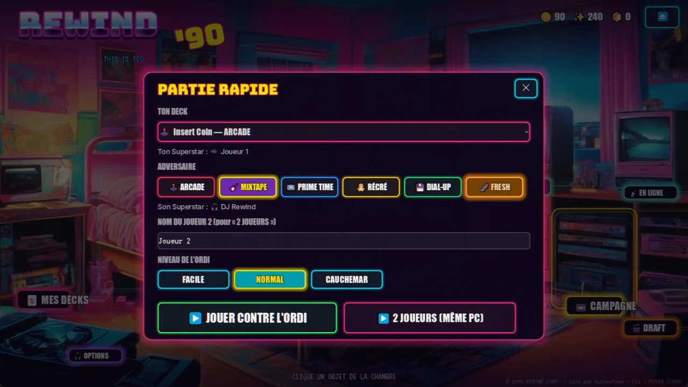

Un TCG PC plein de nostalgie 90s : on ouvre des boosters, on construit ses decks et on affronte l'ordi dans une chambre d'ado rétro où chaque objet est un menu. Jeu privé entre potes.
Projet privé — présenté ici en captures. Code et téléchargement non publics.






Le set de départ plus 3 extensions, 35 jetons, contre l'IA en 3 niveaux.
Ouverture animée, cartes holo et variantes rares : reverse holo, full art, 1ère édition, misprint.
10 cassettes de 1990 à 1999, 30 combats et un boss final : LE BUG.
30 choix parmi 3 cartes, puis des matchs jusqu'à 3 défaites ou 12 victoires.
Un bouton « AUTO » monte le meilleur deck possible avec ta collection.
Reflets animés sur l'illustration, cadre en or liquide pour les légendaires.